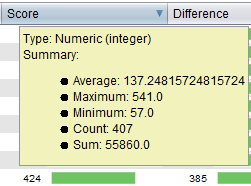

Mascot identifications can be explored and edited using the Mascot identifications table.
Mascot identifications table
The Mascot identifications table allows you to:
To export or save the table you must click the button, which will show you the Export to CSV option that allows you to save the list of identifications into a CSV file.
Mascot identifications table
(click in the image to enlarge)

Detail of the Score column summary obtained by hovering the mouse over this column